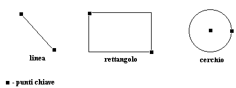

Bitmap Data in File:
0, 0, 0, 0, 0, 0, 0, 0, 255, 255, 255, 255, 255, 0, 0, ...
I dati bitmap sono formati da un insieme di valori numerici, corrispondenti agli indici dei colori della palette, che rappresentano i singoli pixel.
La parola bitmap significa letteralmente mappa di bit, e ogni bit corrisponde a un pixel. In realtà la corrispondenza non è così diretta, infatti viene
utilizzato il termine profondità per rappresentare il numero di bit per pixel, cioè il numero di colori rappresentabili secondo la legge
numero di colori 2n con n numero di bit. Ad esempio, una profondità di 1 bit consente due colori, una di 4 bit consente 16 colori, e
così via.
Bitmap Data in File:
0, 0, 0, 0, 0, 0, 0, 0, 255, 255, 255, 255, 255, 0, 0, ...
I dati vettoriali sono un insieme di punti chiave, che vengono usati da un programma di rendering per ricostruire linee, poligoni,
curve e qualsiasi oggetto facilmente rappresentabile con linee. Associati ai punti chiave ci sono informazioni su attributi, come il colore,
lo spessore delle linee, e un set di regole per il programma che deve tracciare i disegni.

I metafile sono un insieme di dati bitmap e di dati vettoriali. Vengono utilizzati per trasferire dati tra diverse macchine. La natura character - oriented dei metafile ASCII, in particolare, elimina i problemi dovuti all'ordinamento dei byte nonché quelli incontrati trasferendo file binari nelle reti, dove l'eliminazione dell'ottavo bit di ogni byte può danneggiare irreparabilmente il file.